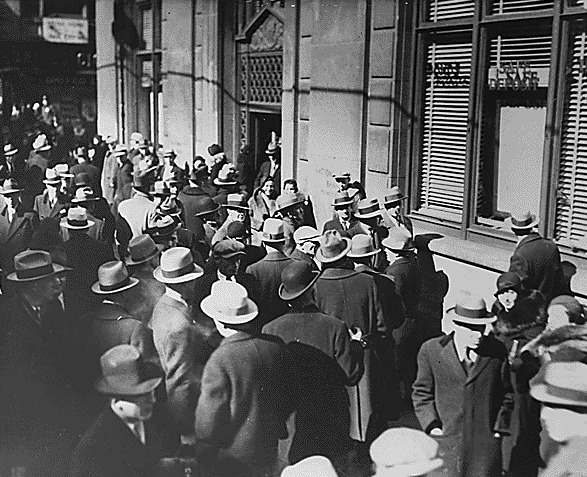

Directions: Your group is a drafting team in Washington in March 1933. At each station your group receives one crisis file. Draft the operative clauses of the one page bill you would send to Congress for that crisis. Work through the five stations in order. In Part 2, compare your drafts with the laws Congress actually passed.
Source: Crisis file prepared for this lesson from the record of the banking collapse of February and March 1933. It is a teaching summary, not a transcription of one surviving document.
Banks have failed by the thousands since 1930. In February and March, depositors rushed to withdraw savings before their own bank closed, and each rush drained the next bank. Governors in state after state have proclaimed state bank holidays. In many cities no bank is open. The new president must decide whether the federal government will close every bank at once, inspect them, and reopen only the sound ones, and on what legal authority.

State the problem in one sentence, naming who is harmed and how.
Draft your bill. Write its three operative clauses: what the president may order, who inspects the banks, and which banks may reopen and on what condition.
Source: Crisis file prepared for this lesson from the record of farm prices and surpluses in 1932 and 1933. It is a teaching summary.
Farm prices have fallen by more than half since 1929. Cotton, corn, and wheat pile up unsold because farmers, each acting alone, grow as much as they can to cover fixed debts, and the surplus drives prices lower still. Many farmers owe more on their land than the crop returns. A bill that pays farmers to produce less would raise prices only if enough farmers join, and only if the money to pay them can be raised.
State the problem in one sentence, naming why individual farmers cannot solve it alone.
Draft your bill. Write its three operative clauses: what farmers agree to do, what the government pays and how it raises the money, and who administers the program.
Source: Crisis file prepared for this lesson from surveys of the Tennessee River valley in the early 1930s. It is a teaching summary.
The Tennessee River floods farmland and towns in wet years and runs too low for navigation in dry ones. Most farm homes in the valley have no electric power, because private companies find scattered farm customers unprofitable to serve. A federal dam at Muscle Shoals, built during the First World War, stands unfinished in purpose, argued over by Congress and private power companies for more than a decade. The valley is one region with one river, and its problems cross seven state lines.
State the problem in one sentence, naming why no single state or company has solved it.
Draft your bill. Write its three operative clauses: what the new authority may build, what benefits besides power it must deliver, and how it is governed.
Source: Crisis file prepared for this lesson from the record of wages, hours, and prices in American industry in 1932 and 1933. It is a teaching summary.
Factories stand idle and about one worker in four has no job. Firms that still run compete by cutting prices, and to survive the price cuts they cut wages and lengthen hours, which leaves workers with less money to buy goods, which idles more factories. Business leaders ask the government to let each industry set rules together, including minimum wages and maximum hours, and to suspend the antitrust laws that now forbid such agreements. Labor leaders ask that any such bill protect the right of workers to organize.
State the problem in one sentence, naming the circle that keeps pulling wages and buying down together.
Draft your bill. Write its three operative clauses: what each industry code may set, what protection workers receive, and what happens to a firm that refuses its code.
Source: Crisis file prepared for this lesson from state and city relief records of the winter of 1932 to 1933. It is a teaching summary.
City and private charity relief funds are exhausted in many places. Families face eviction and hunger while public works that the country needs, roads, schools, and parks, go unbuilt for lack of money. The new administration must decide whether the federal government will pay for relief directly, put the unemployed to work on public projects, lend to the states, or combine these, and how fast any of it can begin.
State the problem in one sentence, naming what local relief has run out of.
Draft your bill. Write its three operative clauses: what form the federal help takes, who receives it first, and what public work, if any, it must produce.
Compare your draft with the law Congress actually passed. For each file, mark what Congress added to a typical draft, what it cut, and what it left out entirely.
| File | The law actually passed |
|---|---|
| Banking | Emergency Banking Act, March 9, 1933. Presidential power over banking confirmed, sound banks reopened under federal license. |
| Farm prices | Agricultural Adjustment Act, May 1933. Payments to reduce production toward parity, funded by a processing tax. |
| River valley | Tennessee Valley Authority Act, May 1933. A federal corporation to build dams, control flooding, and bring electricity and development to the valley. |
| Industrial collapse | National Industrial Recovery Act, June 1933. Industry codes of fair competition setting wages, hours, and prices, with the right to organize protected. |
| Unemployment | Federal Emergency Relief Act and the Civilian Conservation Corps, spring 1933. Federal relief money through the states, and paid camp work for young men. Lesson 4 takes up these agencies in full. |
Rank your five drafts from 1 to 5 by how close each one came to the law actually passed. (1 = Closest, 5 = Furthest).
______ Station 1: The Banking File
______ Station 2: The Farm Prices File
______ Station 3: The River Valley File
______ Station 4: The Industrial Collapse File
______ Station 5: The Unemployment File
Defend your closest match in a short paragraph. Name one thing Congress added that your group did not write, one thing it cut or refused, and what the difference shows about governing in the Hundred Days.
State the problem. Depositors rushing to withdraw were draining sound banks along with weak ones, and savers and borrowers in every state were harmed because no one could tell a sound bank from a failed one.
The draft and the law. Strong drafts order a national closing, federal inspection, and reopening by license. Congress passed exactly that structure in the Emergency Banking Act of March 9. What most drafts miss is the speed and the source of authority, a wartime trading law used in peacetime, and the staged reopening that let the strongest banks prove the system first.
State the problem. Each farmer growing more to cover fixed debts enlarged a surplus that drove prices down for all farmers, so no farmer acting alone could raise prices.
The draft and the law. Strong drafts pay for reduced production and name a funding source. The Agricultural Adjustment Act paid for reductions toward parity and funded payments with a processing tax. What Congress accepted that students often resist is paying farmers to plow under a growing crop and reduce herds in a hungry country, which the emergency made defensible to the majority.
State the problem. One river crossing seven states flooded, ran dry, and left farm homes without power, and neither single states nor private companies would or could develop the whole valley.
The draft and the law. Strong drafts create a single authority with power to build. Congress created the Tennessee Valley Authority as a federal corporation, broader than most drafts, joining dams, flood control, navigation, fertilizer, and electricity in one body.
State the problem. Price cutting forced wage cutting, wage cutting cut buying, and cut buying idled more factories, a circle no single firm could break without losing to competitors who kept cutting.
The draft and the law. Strong drafts set industry codes, floors on wages, ceilings on hours, and protection for organizing. The National Industrial Recovery Act did all four and added the Blue Eagle enforcement campaign of Lesson 4. What Congress left uncertain, and drafts should be pressed on, is enforcement against a firm that signs a code and then breaks it.
State the problem. City and charity relief funds were exhausted while millions were idle and public work went unbuilt.
The draft and the law. Congress combined the forms. Federal relief money went through the states under the Federal Emergency Relief Administration, and paid camp work began under the Civilian Conservation Corps. Drafts that chose only one form should be compared with the combination Congress chose, which is the subject of Lesson 4.
Full credit should be awarded if the student: